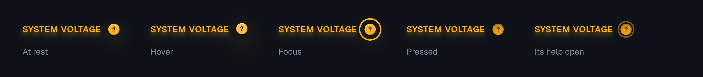
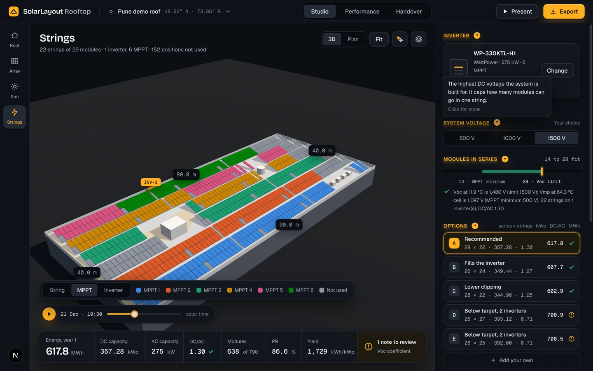
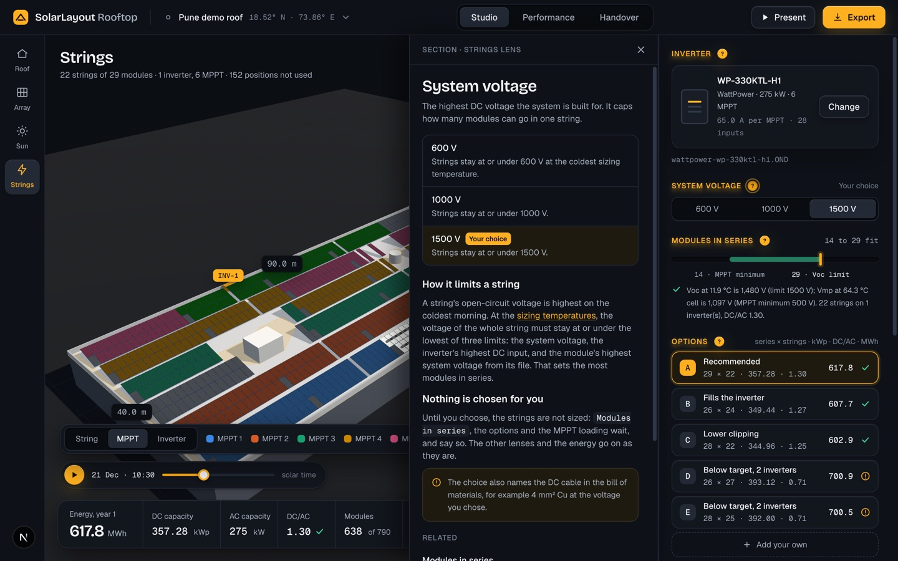
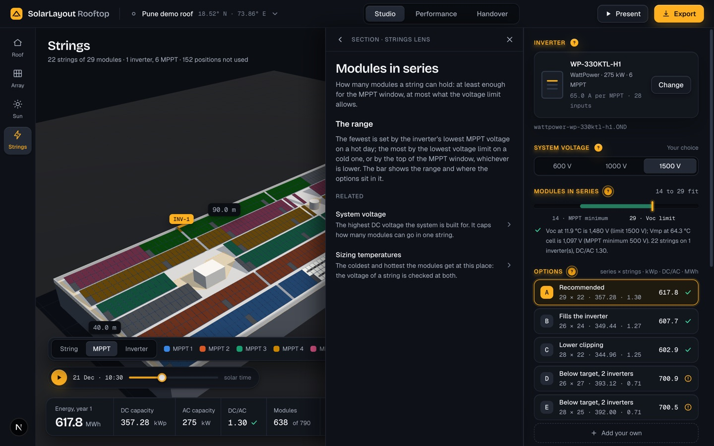
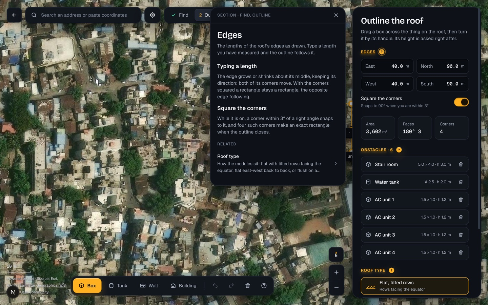

A ? beside each section heading of the input panels opens help on what the section is, its choices and what they do, in the app's own words. The core is the help system of the solarlayout app (topics in MDX, each with a key; a typed registry checked by tests; a drawer with Back and related topics; the topic in the address); the look and the places are this app's. The disc and the drawer are drawn here by a prototype in the app itself; the words of the sample topics are checked against the engine. Desktop: the drawer stands beside the panel, the fields still there to change.




